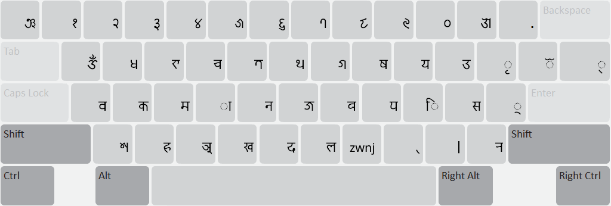
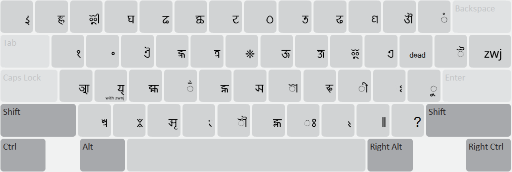
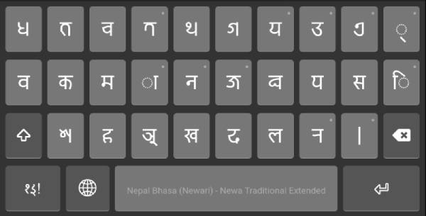
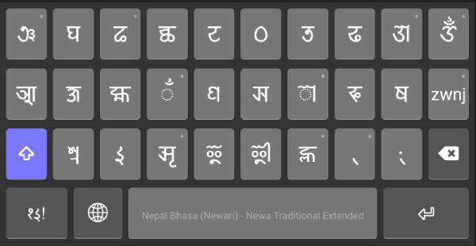

Start Using Newa Traditional Extended
Extended Traditional Layout for Nepal Bhasa in Prachalit Newa Script.
For desktop
Normal State

Shift State

Use dead key { for special characters like ! , @ etc.
{ ! = !
{ @ = @
For mobile and tablet
While most of the layout remains the same as in desktop version, numerals
have been moved to separate layer and some characters have been moved to
longpress menu to account for limited screen estate. Wherever a long press
menu is available, there is a small dot on right top of the key.
Normal State

Shift State

Notable longpresses
Normal State
- 𑐟𑑂𑐬 is in 𑐟
- 𑐅 is in 𑐄
- 𑐋𑐾𑐿 are in 𑐊
- 𑐺 is in 𑑂
- 𑑅 is in 𑐵
- 𑐤 is in 𑐣
- 𑐖𑑂𑐘 is in 𑐖
- 𑐭 is in 𑐬
- 𑑌? are in 𑑋
- 𑐷𑐸𑐹 are in 𑐶
-
non joining 𑐫𑑂 as in
𑐩𑐫𑑂𑐖𑐸 is in 𑐫
Shift State
- 𑐍 is in 𑐌
- 𑑊 is in 𑑉
- 𑑄 is in 𑑃
- 𑑁 is in 𑑀
- zwj is in zwnj
- 𑑚, are in 𑑍
© 2023 Swornim Nakarmi